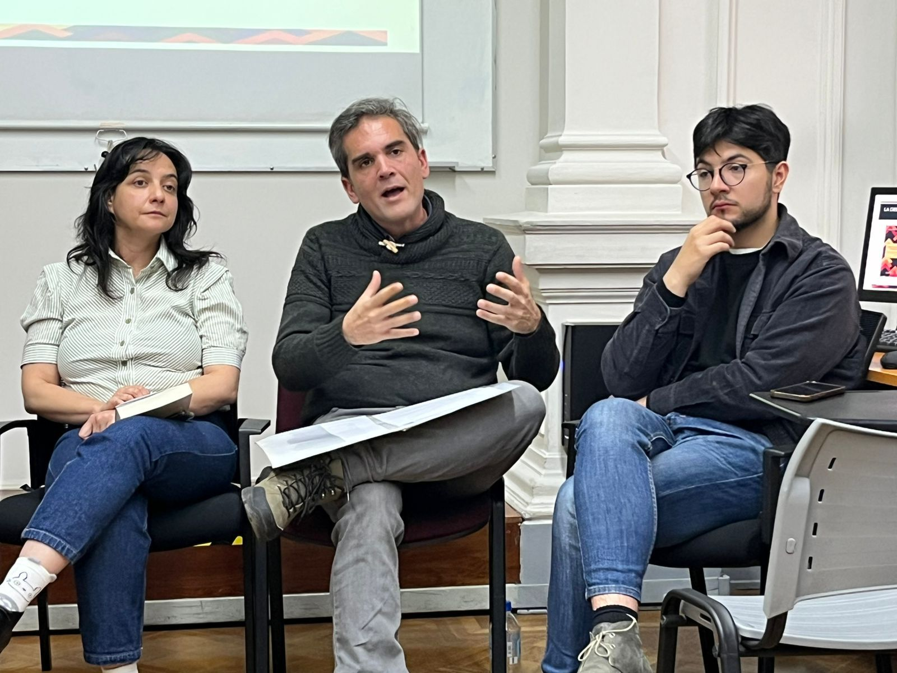
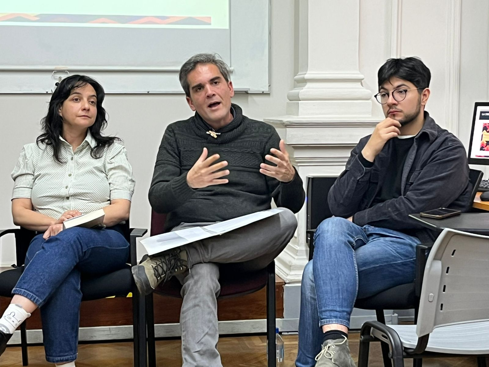
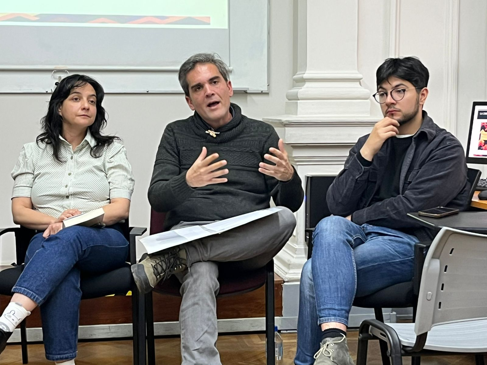
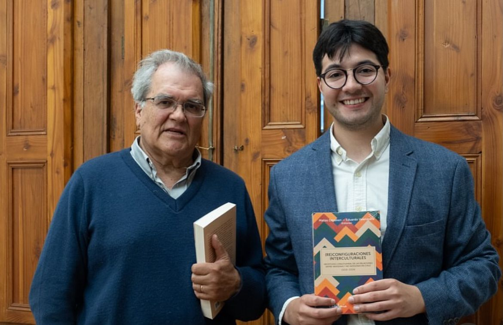

Nuestro investigador asistente, Matías Deneken, se desempeñó como editor del libro [Re]configuraciones interculturales: Un estudio longitudinal de las relaciones entre indígenas y no indígenas, publicado por Editorial Catalonia. El volumen reúne 11 capítulos que abordan, entre otras líneas, salud mental, relaciones intergrupales y conflicto, a partir del Estudio Longitudinal de Relaciones Interculturales (ELRI). ELRI es una fuente innovadora que sobrerrepresenta a la población indígena para compararla rigurosamente con la población no indígena en Chile, bajo un diseño de “muestra espejo” y mediciones nacionales en 2016, 2018, 2021 y 2023. El libro da cuenta de importantes cambios y continuidades en las relaciones interétnicas.
En la presentación realizada en el Centro de Extensión de la Pontificia Universidad Católica de Chile, comentaron la obra Juan Pablo Luna, Fernando Pairicán y Verónica Figueroa Huencho. En la Universidad Mayor, en un encuentro ampliamente concurrido, Mayarí Castillo, Rodrigo Pérez, Marjorie Murray y Gabriela Piña presentaron sus capítulos, y Nicolás Montalva tuvo a su cargo el comentario general. En ambas instancias, las y los comentaristas subrayaron la relevancia del libro para comprender las relaciones interétnicas en Chile y su pertinencia en el marco del proceso constituyente. Créditos: CentroCIIR.

